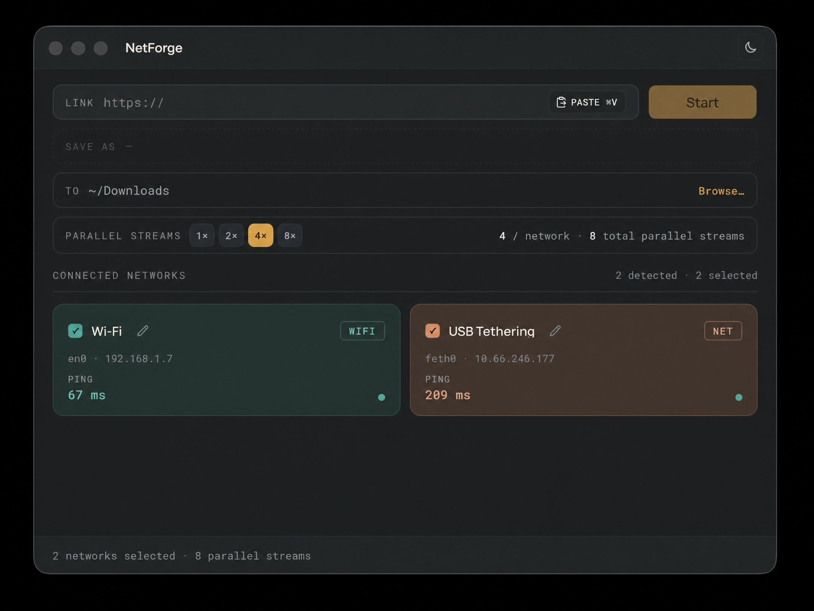
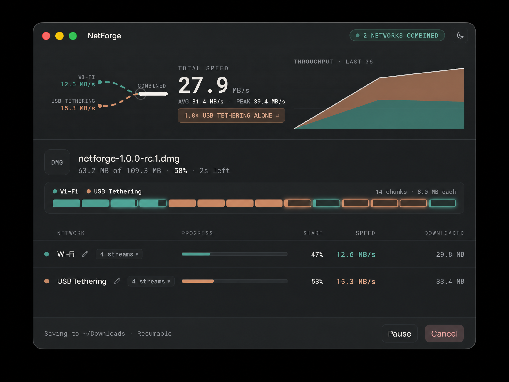
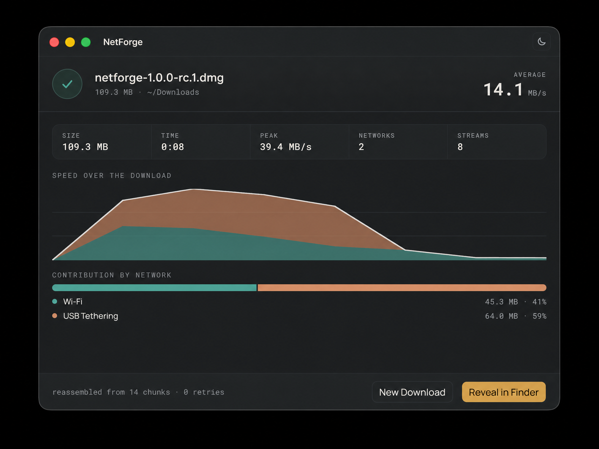

NetForge
NetForgeUse every connection.
Finish one file.
NetForge is a focused download workbench for people who have more than one route to the internet. It splits ranged downloads, assigns work to each interface, and verifies the final file.
A practical pipeline, not magic.
Click a stage to inspect the decision NetForge makes. The app stays deliberately small: probe, split, route, verify.
Range support, size, filename, and validators.
Chunks up to 8 MB enter one shared queue.
Workers use the selected local address.
Parts merge in order and are checked.
See the work as it happens.
A compact gallery of the working interface. Select a frame to inspect it at full size.



Pick your platform.
Search the published rc.9 artifacts or filter by operating system. Every Download button points to the public GitHub release.
Source, site, release.
The project is public under the krish2214 account. The live website is configured as the repository’s homepage.
Live website
Share this URL with users, testers, and contributors.